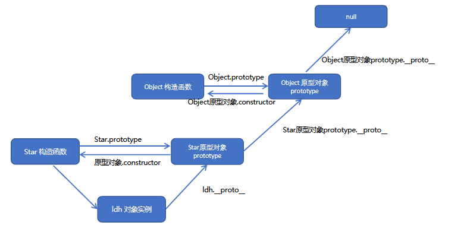

<!DOCTYPE html>
<html>
<head><meta name="generator" content="Hexo 3.9.0">
  <meta charset="utf-8">

  <!-- PACE Progress Bar START -->
  
    <script src="https://raw.githubusercontent.com/HubSpot/pace/v1.0.2/pace.min.js"></script>
    <link rel="stylesheet" href="https://github.com/HubSpot/pace/raw/master/themes/orange/pace-theme-flash.css">
  
  

  <!-- PACE Progress Bar START -->

  
  <title>es5和es6类构造和继承的对比 | Zhiyu&#39;s blog</title>
  <meta name="viewport" content="width=device-width, initial-scale=1, maximum-scale=1">
  
  <meta name="keywords" content="Java script">
  
  
  
  
  <meta name="description" content="在典型的OOP 的语言中（如Java），都存在类的概念，类就是对象的模板，对象就是类的实例，但在ES6之前，JS 中并没用引入类的概念，对象不是基于类创建的，而是用一种称为构建函数的特殊函数来定义对象和它们的特征。在ES6中，全称ECMAScript6.0 ，能够直接创建类，虽然高版本的浏览器也支持ES6，目前很多浏览器的JavaScript 是ES5 版本，因此了解ES5类创建的过程也是很重要的">
<meta name="keywords" content="Java script">
<meta property="og:type" content="article">
<meta property="og:title" content="ES5和ES6类构造和继承的对比">
<meta property="og:url" content="https://zhiyuXiao1221.github.io/2020/07/23/ES5以及ES6构造和继承的对比/index.html">
<meta property="og:site_name" content="Zhiyu&#39;s blog">
<meta property="og:description" content="在典型的OOP 的语言中（如Java），都存在类的概念，类就是对象的模板，对象就是类的实例，但在ES6之前，JS 中并没用引入类的概念，对象不是基于类创建的，而是用一种称为构建函数的特殊函数来定义对象和它们的特征。在ES6中，全称ECMAScript6.0 ，能够直接创建类，虽然高版本的浏览器也支持ES6，目前很多浏览器的JavaScript 是ES5 版本，因此了解ES5类创建的过程也是很重要的">
<meta property="og:locale" content="en">
<meta property="og:image" content="https://zhiyuxiao1221.github.io/2020/07/23/ES5以及ES6构造和继承的对比/gallery/原型链2.png">
<meta property="og:updated_time" content="2020-07-24T06:38:12.944Z">
<meta name="twitter:card" content="summary">
<meta name="twitter:title" content="ES5和ES6类构造和继承的对比">
<meta name="twitter:description" content="在典型的OOP 的语言中（如Java），都存在类的概念，类就是对象的模板，对象就是类的实例，但在ES6之前，JS 中并没用引入类的概念，对象不是基于类创建的，而是用一种称为构建函数的特殊函数来定义对象和它们的特征。在ES6中，全称ECMAScript6.0 ，能够直接创建类，虽然高版本的浏览器也支持ES6，目前很多浏览器的JavaScript 是ES5 版本，因此了解ES5类创建的过程也是很重要的">
<meta name="twitter:image" content="https://zhiyuxiao1221.github.io/2020/07/23/ES5以及ES6构造和继承的对比/gallery/原型链2.png">
  
    <link rel="alternate" href="/atom.xml" title="Zhiyu&#39;s blog" type="application/atom+xml">
  
  <link rel="icon" href="/css/images/favicon.ico">
  
    <link href="//fonts.googleapis.com/css?family=Source+Code+Pro" rel="stylesheet" type="text/css">
  
  <link href="https://fonts.googleapis.com/css?family=Open+Sans|Montserrat:700" rel="stylesheet" type="text/css">
  <link href="https://fonts.googleapis.com/css?family=Roboto:400,300,300italic,400italic" rel="stylesheet" type="text/css">
  <link href="https://cdn.bootcss.com/font-awesome/4.6.3/css/font-awesome.min.css" rel="stylesheet">
  <style type="text/css">
    @font-face{font-family:futura-pt;src:url(https://use.typekit.net/af/9749f0/00000000000000000001008f/27/l?subset_id=2&fvd=n5) format("woff2");font-weight:500;font-style:normal;}
    @font-face{font-family:futura-pt;src:url(https://use.typekit.net/af/90cf9f/000000000000000000010091/27/l?subset_id=2&fvd=n7) format("woff2");font-weight:500;font-style:normal;}
    @font-face{font-family:futura-pt;src:url(https://use.typekit.net/af/8a5494/000000000000000000013365/27/l?subset_id=2&fvd=n4) format("woff2");font-weight:lighter;font-style:normal;}
    @font-face{font-family:futura-pt;src:url(https://use.typekit.net/af/d337d8/000000000000000000010095/27/l?subset_id=2&fvd=i4) format("woff2");font-weight:400;font-style:italic;}</style>
    
  <link rel="stylesheet" id="athemes-headings-fonts-css" href="//fonts.googleapis.com/css?family=Yanone+Kaffeesatz%3A200%2C300%2C400%2C700&amp;ver=4.6.1" type="text/css" media="all">
  <link rel="stylesheet" href="../../../../css/style.css">

  <script src="https://code.jquery.com/jquery-3.1.1.min.js"></script>

  <!-- Bootstrap core CSS -->
  <link rel="stylesheet" href="https://netdna.bootstrapcdn.com/bootstrap/3.0.2/css/bootstrap.min.css">
  <link rel="stylesheet" href="/css/hiero.css">
  <link rel="stylesheet" href="/css/glyphs.css">
  
    <link rel="stylesheet" href="/css/vdonate.css">
  

  <!-- Custom CSS -->
  <link rel="stylesheet" href="../../../../css/my.css">
  <!-- Google Adsense -->
  
  <script async src="//pagead2.googlesyndication.com/pagead/js/adsbygoogle.js"></script>
  <script>
      (adsbygoogle = window.adsbygoogle || []).push({
          google_ad_client: "ca-pub-0123456789ABCDEF",
          enable_page_level_ads: true
      });
  </script>
  
</head>
</html>
<script>
var themeMenus = {};

  themeMenus["../../../../index.html"] = "Home"; 

  themeMenus["../../../../archives"] = "Archives"; 

  themeMenus["../../../../categories"] = "Categories"; 

  themeMenus["../../../../tags"] = "Tags"; 

  themeMenus["../../../../about"] = "About"; 

</script>


  <body data-spy="scroll" data-target="#toc" data-offset="50">


  <header id="allheader" class="site-header" role="banner">
  <div class="clearfix container">
      <div class="site-branding">

          <h1 class="site-title">
            
              <a href="/" title="Zhiyu&#39;s blog" rel="home"> Zhiyu&#39;s blog </a>
            
          </h1>

          
            <div class="site-description">Have a down-to-earth attitude.</div>
          
            
          <nav id="main-navigation" class="main-navigation" role="navigation">
            <a class="nav-open">Menu</a>
            <a class="nav-close">Close</a>
            <div class="clearfix sf-menu">

              <ul id="main-nav" class="nmenu sf-js-enabled">
                    
                      <li class="menu-item menu-item-type-custom menu-item-object-custom menu-item-home menu-item-1663"> <a class="" href="../../../../index.html">Home</a> </li>
                    
                      <li class="menu-item menu-item-type-custom menu-item-object-custom menu-item-home menu-item-1663"> <a class="" href="../../../../archives">Archives</a> </li>
                    
                      <li class="menu-item menu-item-type-custom menu-item-object-custom menu-item-home menu-item-1663"> <a class="" href="../../../../categories">Categories</a> </li>
                    
                      <li class="menu-item menu-item-type-custom menu-item-object-custom menu-item-home menu-item-1663"> <a class="" href="../../../../tags">Tags</a> </li>
                    
                      <li class="menu-item menu-item-type-custom menu-item-object-custom menu-item-home menu-item-1663"> <a class="" href="../../../../about">About</a> </li>
                    
              </ul>
            </div>
          </nav>


      </div>
  </div>
</header>


  <div id="originBgDiv" style="background: #fff; width: 100%;">

      <div style="max-height:600px; overflow: hidden;  display: flex; display: -webkit-flex; align-items: center;">
        
      </div>

  </div>

  <script>
  function setAboutIMG(){
      var imgUrls = "css/images/pose.jpg,https://source.unsplash.com/collection/954550/1920x1080".split(",");
      var random = Math.floor((Math.random() * imgUrls.length ));
      if (imgUrls[random].startsWith('http') || imgUrls[random].indexOf('://') >= 0) {
        document.getElementById("originBg").src=imgUrls[random];
      } else {
        document.getElementById("originBg").src='/' + imgUrls[random];
      }
  }
  bgDiv=document.getElementById("originBgDiv");
  if(location.pathname.match('about')){
    setAboutIMG();
    bgDiv.style.display='block';
  }else{
    bgDiv.style.display='none';
  }
  </script>


  <div id="container">
    <div id="wrap">
            
      <div id="content" class="outer">
        
          <section id="main" style="float:none;"><article id="post-ES5以及ES6构造和继承的对比" style="width: 66%; float:left;" class="article article-type-post" itemscope itemprop="blogPost" >
  <div id="articleInner" class="clearfix post-1016 post type-post status-publish format-standard has-post-thumbnail hentry category-template-2 category-uncategorized tag-codex tag-edge-case tag-featured-image tag-image tag-template">
    
<div class="article-gallery">
  <div class="article-gallery-photos">
    
      <a class="article-gallery-img fancybox" href="../../../../gallery/原型链2.png" rel="gallery_ckd12jf1e0009qcv0s5uimiec">
        
      </a>
    
  </div>
</div>

    
      <header class="article-header">
        
  
    <h1 class="thumb" class="article-title" itemprop="name">
      ES5和ES6类构造和继承的对比
    </h1>
  

      </header>
    
    <div class="article-meta">
      
	Posted on <a href="" class="article-date">
	  <time datetime="2020-07-23T03:20:29.000Z" itemprop="datePublished">July 23, 2020</time>
	</a>

      
	<span id="busuanzi_container_page_pv">
	  本文总阅读量<span id="busuanzi_value_page_pv"></span>次
	</span>

    </div>
    <div class="article-entry" itemprop="articleBody">
      
        <p>在典型的OOP 的语言中（如Java），都存在类的概念，类就是对象的模板，对象就是类的实例，但在ES6之前，JS 中并没用引入类的概念，对象不是基于类创建的，而是用一种称为构建函数的特殊函数来定义对象和它们的特征。在ES6中，全称ECMAScript6.0 ，能够直接创建类，虽然高版本的浏览器也支持ES6，目前很多浏览器的JavaScript 是ES5 版本，因此了解ES5类创建的过程也是很重要的</p>
<a id="more"></a>
<h2 id="一、ES5类的构造、继承（涉及原型链）"><a href="#一、ES5类的构造、继承（涉及原型链）" class="headerlink" title="一、ES5类的构造、继承（涉及原型链）"></a>一、ES5类的构造、继承（涉及原型链）</h2><h3 id="1-ES5的构造"><a href="#1-ES5的构造" class="headerlink" title="1.ES5的构造"></a>1.ES5的构造</h3><p>JavaScript 规定，每一个构造函数都有一个prototype 属性，指向另一个对象。注意这个prototype 就是一个对象，这个对象的所有属性和方法，都会被构造函数所拥有。可以把那些不变的方法，直接定义在prototype 对象上，这样所有对象的实例就可以共享这些方法</p>
<figure class="highlight javascript"><table><tr><td class="gutter"><pre><span class="line">1</span><br><span class="line">2</span><br><span class="line">3</span><br><span class="line">4</span><br><span class="line">5</span><br><span class="line">6</span><br><span class="line">7</span><br><span class="line">8</span><br><span class="line">9</span><br><span class="line">10</span><br><span class="line">11</span><br><span class="line">12</span><br><span class="line">13</span><br></pre></td><td class="code"><pre><span class="line"><span class="function"><span class="keyword">function</span> <span class="title">Person</span>(<span class="params">uname,age</span>) </span>&#123;</span><br><span class="line">    <span class="keyword">this</span>.uname = uname;</span><br><span class="line">    <span class="keyword">this</span>.age = age;</span><br><span class="line">&#125;</span><br><span class="line">	<span class="comment">//sing方法属于不变的方法，放在prototype里面</span></span><br><span class="line">	Person.prototype.sing = <span class="function"><span class="keyword">function</span> (<span class="params"></span>) </span>&#123;</span><br><span class="line">		<span class="built_in">console</span>.log(<span class="keyword">this</span>.uname + <span class="string">'在唱歌'</span>);</span><br><span class="line">	&#125;</span><br><span class="line">	<span class="keyword">var</span> obj = <span class="keyword">new</span> Person(<span class="string">'小名'</span>,<span class="number">22</span>);</span><br><span class="line">    <span class="comment">//静态成员：在构造函数本身添加的成员叫做静态成员</span></span><br><span class="line">	Person.tag = <span class="string">"people"</span>;</span><br><span class="line">	<span class="comment">//实例成员：在构造函数内部创建的成员成为实例成员，是由实例化对象来访问</span></span><br><span class="line">	obj.tag = <span class="string">"People"</span>;</span><br></pre></td></tr></table></figure>
<h3 id="2-构造函数、原型对象和对象原型"><a href="#2-构造函数、原型对象和对象原型" class="headerlink" title="2.构造函数、原型对象和对象原型"></a>2.构造函数、原型对象和对象原型</h3><p>原型（<strong>proto</strong>）和构造函数（prototype）原型对象里面都有一个属性constructor属性，constructor 我们称为构造函数，因为它指回构造函数本身。constructor 主要用于记录该对象引用于哪个构造函数，它可以让原型对象重新指向原来的构造函数。一般情况下，对象的方法都在构造函数的原型对象中设置。如果有多个对象的方法，我们可以给原型对象采取对象形式赋值，但是这样就会覆盖构造函数原型对象原来的内容，这样修改后的原型对象constructor  就不再指向当前构造函数了。此时，我们可以在修改后的原型对象中，添加一个constructor 指向原来的构造函数。</p>
<p><strong>总结：每一个对象都有一个原型，作用是指向原型对象prototype</strong></p>
<p><strong><strong><strong>proto</strong></strong>主要作用是指向prototype</strong></p>
<p><strong>constructor是指回构造函数</strong></p>
<p></p>
<h3 id="3-原型链"><a href="#3-原型链" class="headerlink" title="3.原型链"></a>3.原型链</h3><p>作用：提供一个成员的查找机制，或者查找规则</p>
<p>当访问一个对象的属性（包括方法）时，首先查找这个对象自身有没有该属性。</p>
<p>如果没有就查找它的原型（也就是<strong>__proto_</strong>指向的prototype 原型对象）。</p>
<p>如果还没有就查找原型对象的原型（Object的原型对象）。</p>
<p>依此类推一直找到Object 为止（null）。</p>
<p><strong>__proto_</strong>对象原型的意义就在于为对象成员查找机制提供一个方向，或者说一条路线。</p>
<p>// console.log(Star.prototype.<strong>__proto_</strong>.<strong>__proto</strong>);<br>// console.log(Object.prototype);</p>
<p></p>
<h3 id="4-ES5的继承"><a href="#4-ES5的继承" class="headerlink" title="4.ES5的继承"></a>4.ES5的继承</h3><h4 id="属性的继承"><a href="#属性的继承" class="headerlink" title="属性的继承"></a>属性的继承</h4><p>call()调用这个函数, 并且修改函数运行时的this 指向，fun.call(thisArg, arg1, arg2, …);call把父类的this指向子类。thisArg ：当前调用函数this 的指向对象，arg1，arg2：传递的其他参数</p>
<figure class="highlight javascript"><table><tr><td class="gutter"><pre><span class="line">1</span><br><span class="line">2</span><br><span class="line">3</span><br><span class="line">4</span><br><span class="line">5</span><br><span class="line">6</span><br><span class="line">7</span><br><span class="line">8</span><br><span class="line">9</span><br><span class="line">10</span><br><span class="line">11</span><br><span class="line">12</span><br><span class="line">13</span><br><span class="line">14</span><br><span class="line">15</span><br><span class="line">16</span><br><span class="line">17</span><br><span class="line">18</span><br><span class="line">19</span><br><span class="line">20</span><br><span class="line">21</span><br></pre></td><td class="code"><pre><span class="line"><span class="function"><span class="keyword">function</span> <span class="title">Father</span> (<span class="params">uname,age</span>) </span>&#123;</span><br><span class="line">	<span class="comment">// this指向父类的实例对象</span></span><br><span class="line">	<span class="keyword">this</span>.uname = uname;</span><br><span class="line">	<span class="keyword">this</span>.age = age;</span><br><span class="line">	<span class="comment">// 只要把父类的this指向子类的this既可</span></span><br><span class="line">&#125;</span><br><span class="line"><span class="function"><span class="keyword">function</span> <span class="title">Son</span> (<span class="params">uname, age,score</span>) </span>&#123;</span><br><span class="line">	<span class="comment">// this指向子类构造函数</span></span><br><span class="line">	<span class="comment">// this.uname = uname;</span></span><br><span class="line">	<span class="comment">// this.age = age;</span></span><br><span class="line">	<span class="comment">// Father(uname,age);</span></span><br><span class="line">	Father.call(<span class="keyword">this</span>,uname,age);</span><br><span class="line">	<span class="keyword">this</span>.score = score;</span><br><span class="line">&#125;</span><br><span class="line">Son.prototype.sing = <span class="function"><span class="keyword">function</span> (<span class="params"></span>) </span>&#123;</span><br><span class="line">	<span class="built_in">console</span>.log(<span class="keyword">this</span>.uname + <span class="string">'唱歌'</span>)</span><br><span class="line">&#125;</span><br><span class="line"><span class="keyword">var</span> obj = <span class="keyword">new</span> Son(<span class="string">'刘德华'</span>,<span class="number">22</span>,<span class="number">99</span>);</span><br><span class="line"><span class="built_in">console</span>.log(obj.uname);</span><br><span class="line"><span class="built_in">console</span>.log(obj.score);</span><br><span class="line">obj.sing();</span><br></pre></td></tr></table></figure>
<h4 id="方法的继承"><a href="#方法的继承" class="headerlink" title="方法的继承"></a>方法的继承</h4><p><strong>实现方法把父类的实例对象保存给子类的原型对象</strong></p>
<p>一般情况下，对象的方法都在构造函数的原型对象中设置，通过构造函数无法继承父类方法。核心原理：</p>
<p>①将子类所共享的方法提取出来，让子类的prototype 原型对象= new 父类()  </p>
<p>②本质：子类原型对象等于是实例化父类，因为父类实例化之后另外开辟空间，就不会影响原来父类原型对象</p>
<p>③将子类的constructor指向子类的构造函数</p>
<figure class="highlight javascript"><table><tr><td class="gutter"><pre><span class="line">1</span><br><span class="line">2</span><br><span class="line">3</span><br><span class="line">4</span><br><span class="line">5</span><br><span class="line">6</span><br><span class="line">7</span><br><span class="line">8</span><br><span class="line">9</span><br><span class="line">10</span><br><span class="line">11</span><br><span class="line">12</span><br><span class="line">13</span><br><span class="line">14</span><br><span class="line">15</span><br><span class="line">16</span><br><span class="line">17</span><br><span class="line">18</span><br><span class="line">19</span><br><span class="line">20</span><br><span class="line">21</span><br></pre></td><td class="code"><pre><span class="line"><span class="function"><span class="keyword">function</span> <span class="title">Father</span> (<span class="params"></span>) </span>&#123;</span><br><span class="line">&#125;</span><br><span class="line">Father.prototype.chang = <span class="function"><span class="keyword">function</span> (<span class="params"></span>) </span>&#123;</span><br><span class="line">	<span class="built_in">console</span>.log(<span class="string">'唱歌'</span>);</span><br><span class="line">&#125;</span><br><span class="line"><span class="function"><span class="keyword">function</span> <span class="title">Son</span> (<span class="params"></span>) </span>&#123;</span><br><span class="line"></span><br><span class="line">&#125;</span><br><span class="line"><span class="comment">// Son.prototype = Father.prototype;</span></span><br><span class="line">Son.prototype = <span class="keyword">new</span> Father();</span><br><span class="line"><span class="keyword">var</span> obj = <span class="keyword">new</span> Son();</span><br><span class="line">obj.chang();</span><br><span class="line"></span><br><span class="line">Son.prototype.score = <span class="function"><span class="keyword">function</span> (<span class="params"></span>) </span>&#123;</span><br><span class="line">	<span class="built_in">console</span>.log(<span class="string">'考试'</span>);</span><br><span class="line">&#125;</span><br><span class="line"><span class="comment">//实现继承后，让Son指回原构造函数</span></span><br><span class="line">Son.prototype.constructor = Son;</span><br><span class="line"><span class="comment">// obj.score();</span></span><br><span class="line"><span class="comment">// console.log(Son.prototype);</span></span><br><span class="line"><span class="built_in">console</span>.log(Father.prototype);</span><br></pre></td></tr></table></figure>
<h2 id="二、ES6的构造和继承"><a href="#二、ES6的构造和继承" class="headerlink" title="二、ES6的构造和继承"></a>二、ES6的构造和继承</h2><h3 id="1-ES6构造"><a href="#1-ES6构造" class="headerlink" title="1.ES6构造"></a>1.ES6构造</h3><p>类有对象的公共属性和方法，用class创建，class里面包含constructor和方法，我们把公共属性放到constructor里面，把公共方法直接往后写既可，但是不要加逗号</p>
<figure class="highlight javascript"><table><tr><td class="gutter"><pre><span class="line">1</span><br><span class="line">2</span><br><span class="line">3</span><br><span class="line">4</span><br><span class="line">5</span><br><span class="line">6</span><br><span class="line">7</span><br><span class="line">8</span><br><span class="line">9</span><br><span class="line">10</span><br><span class="line">11</span><br><span class="line">12</span><br><span class="line">13</span><br><span class="line">14</span><br><span class="line">15</span><br><span class="line">16</span><br><span class="line">17</span><br><span class="line">18</span><br><span class="line">19</span><br><span class="line">20</span><br><span class="line">21</span><br><span class="line">22</span><br><span class="line">23</span><br></pre></td><td class="code"><pre><span class="line">	<span class="class"><span class="keyword">class</span> <span class="title">Star</span> </span>&#123;</span><br><span class="line">    <span class="comment">// 特别注意：类里面直接方法，不加function关键字</span></span><br><span class="line">    <span class="keyword">constructor</span>(uname, age) &#123;</span><br><span class="line">        <span class="comment">// this：代表当前实例对象，构造函数里面的this指向实例对象</span></span><br><span class="line">        <span class="comment">// uname和age都是属性</span></span><br><span class="line">        <span class="keyword">this</span>.uname = uname;</span><br><span class="line">        <span class="keyword">this</span>.age = age;</span><br><span class="line">        <span class="built_in">console</span>.log(<span class="keyword">this</span>);</span><br><span class="line">    &#125;</span><br><span class="line">    say() &#123;</span><br><span class="line">        <span class="built_in">console</span>.log(<span class="string">'say'</span>);</span><br><span class="line">    &#125;</span><br><span class="line">    jump() &#123;</span><br><span class="line">        <span class="built_in">console</span>.log(<span class="string">'jump'</span>);</span><br><span class="line">    &#125;</span><br><span class="line"></span><br><span class="line">&#125;</span><br><span class="line"><span class="keyword">var</span> o1 = <span class="keyword">new</span> Star(<span class="string">'张三丰'</span>, <span class="number">19</span>);</span><br><span class="line"><span class="built_in">console</span>.log(o1);</span><br><span class="line"><span class="keyword">var</span> o2 = <span class="keyword">new</span> Star(<span class="string">'李寻欢'</span>, <span class="number">21</span>);</span><br><span class="line"><span class="built_in">console</span>.log(o2);</span><br><span class="line">o2.say();</span><br><span class="line">o1.jumo();</span><br></pre></td></tr></table></figure>
<h3 id="2-ES6继承"><a href="#2-ES6继承" class="headerlink" title="2.ES6继承"></a>2.ES6继承</h3><figure class="highlight javascript"><table><tr><td class="gutter"><pre><span class="line">1</span><br><span class="line">2</span><br><span class="line">3</span><br><span class="line">4</span><br><span class="line">5</span><br><span class="line">6</span><br><span class="line">7</span><br><span class="line">8</span><br><span class="line">9</span><br><span class="line">10</span><br><span class="line">11</span><br><span class="line">12</span><br><span class="line">13</span><br><span class="line">14</span><br><span class="line">15</span><br><span class="line">16</span><br><span class="line">17</span><br><span class="line">18</span><br><span class="line">19</span><br><span class="line">20</span><br><span class="line">21</span><br><span class="line">22</span><br><span class="line">23</span><br><span class="line">24</span><br><span class="line">25</span><br><span class="line">26</span><br><span class="line">27</span><br><span class="line">28</span><br><span class="line">29</span><br><span class="line">30</span><br><span class="line">31</span><br><span class="line">32</span><br></pre></td><td class="code"><pre><span class="line"><span class="comment">// 父类</span></span><br><span class="line"><span class="class"><span class="keyword">class</span> <span class="title">Father</span> </span>&#123;</span><br><span class="line"> 	<span class="keyword">constructor</span> (uname, age) &#123;</span><br><span class="line">		<span class="keyword">this</span>.uname = uname;</span><br><span class="line">		<span class="keyword">this</span>.age = age;</span><br><span class="line">	&#125;</span><br><span class="line"> 	qian () &#123;</span><br><span class="line">		<span class="built_in">console</span>.log(<span class="string">'一个亿'</span>);</span><br><span class="line"> 	&#125;</span><br><span class="line"> &#125;</span><br><span class="line"><span class="comment">//  子类</span></span><br><span class="line"><span class="comment">//  extends：申明一个类为子类，继承另外一个类</span></span><br><span class="line"> <span class="class"><span class="keyword">class</span> <span class="title">Son</span> <span class="keyword">extends</span> <span class="title">Father</span> </span>&#123;</span><br><span class="line"><span class="comment">// 子类需要添加自己的属性的时候，需要把参数都接受</span></span><br><span class="line">	<span class="keyword">constructor</span> (uname, age, score) &#123;</span><br><span class="line">   <span class="keyword">super</span>：调用父类的构造方法和普通方法</span><br><span class="line"> 		<span class="keyword">super</span>(uname, age);</span><br><span class="line"> 		<span class="keyword">this</span>.score = score;<span class="comment">// 不可以额外直接定义属性，因为this指向不同</span></span><br><span class="line"> 	&#125;</span><br><span class="line"> 	qian () &#123;</span><br><span class="line"> 		<span class="comment">// 继续调用父类的qian方法</span></span><br><span class="line">		<span class="keyword">super</span>.qian();</span><br><span class="line">		<span class="built_in">console</span>.log(<span class="string">'两毛钱'</span>);</span><br><span class="line"> 	&#125;</span><br><span class="line"> 	<span class="comment">// super：调用父类的普通方法和构造方法</span></span><br><span class="line"> 	<span class="comment">// 构造方法：super(参数，参数)</span></span><br><span class="line"> 	<span class="comment">// 普通方法：super.fangfa();</span></span><br><span class="line">&#125;</span><br><span class="line"><span class="comment">// 已经继承好的话，那么Son也有姓名年龄属性等</span></span><br><span class="line"><span class="keyword">var</span> o = <span class="keyword">new</span> Son(<span class="string">'儿子'</span>, <span class="number">6</span>, <span class="number">66</span>);</span><br><span class="line"><span class="built_in">console</span>.log( o );</span><br><span class="line">o.qian();<span class="comment">// 继承后，如果子类和父类有同名的方法，那么就近原则</span></span><br></pre></td></tr></table></figure>
<h2 id="三、类的本质"><a href="#三、类的本质" class="headerlink" title="三、类的本质"></a>三、类的本质</h2><figure class="highlight javascript"><table><tr><td class="gutter"><pre><span class="line">1</span><br><span class="line">2</span><br><span class="line">3</span><br><span class="line">4</span><br><span class="line">5</span><br></pre></td><td class="code"><pre><span class="line"><span class="class"><span class="keyword">class</span> <span class="title">Star</span> </span>&#123; &#125;</span><br><span class="line">       <span class="built_in">console</span>.log(<span class="string">"type of star is:"</span> + <span class="keyword">typeof</span> Star);  <span class="comment">//function</span></span><br><span class="line">       <span class="keyword">var</span> obj = <span class="keyword">new</span> Star(); </span><br><span class="line">       <span class="built_in">console</span>.log(obj.__proto__); <span class="comment">//这两者一致</span></span><br><span class="line">       <span class="built_in">console</span>.log(Star.prototype);</span><br></pre></td></tr></table></figure>
<p>所有得到总结：class本质还是function，类的所有方法都定义在类的prototype属性上</p>
<p>类创建的实例,里面也有<strong>proto</strong> 指向类的prototype原型对象。所以ES6的类它的绝大部分功能，ES5都可以做到，新的class写法只是让对象原型的写法更加清晰、更像面向对象编程的语法而已。</p>
<p>所以ES6的类其实就是语法糖.语法糖:语法糖就是一种便捷写法.   简单理解, 有两种方法可以实现同样的功能, 但是一种写法更加清晰、方便,那么这个方法就是语法糖</p>

      
    </div>
    <footer class="entry-meta entry-footer">
      
	<span class="ico-folder"></span>
    <a class="article-category-link" href="../../../../categories/前端/">前端</a>

      
  <span class="ico-tags"></span>
  <ul class="article-tag-list"><li class="article-tag-list-item"><a class="article-tag-list-link" href="../../../../tags/Java-script/">Java script</a></li></ul>

      
        <div id="donation_div"></div>

<script src="../../../../js/vdonate.js"></script>
<script>
var a = new Donate({
  title: '如果觉得我的文章对您有用，请随意打赏。您的支持将鼓励我继续创作!', // 可选参数，打赏标题
  btnText: 'Donate', // 可选参数，打赏按钮文字
  el: document.getElementById('donation_div'),
  wechatImage: 'https://raw.githubusercontent.com/iTimeTraveler/iTimeTraveler.github.io/site/source/about/donate/images/WeChanQR.png',
  alipayImage: 'https://raw.githubusercontent.com/iTimeTraveler/iTimeTraveler.github.io/site/source/about/donate/images/AliPayQR.jpg'
});
</script>
      
            
      
        
	<div id="comment">
		<!-- 来必力City版安装代码 -->
		<div id="lv-container" data-id="city" data-uid="MTAyMC8yOTQ4MS82MDQ5">
		<script type="text/javascript">
		   (function(d, s) {
		       var j, e = d.getElementsByTagName(s)[0];

		       if (typeof LivereTower === 'function') { return; }

		       j = d.createElement(s);
		       j.src = 'https://cdn-city.livere.com/js/embed.dist.js';
		       j.async = true;

		       e.parentNode.insertBefore(j, e);
		   })(document, 'script');
		</script>
		<noscript>为正常使用来必力评论功能请激活JavaScript</noscript>
		</div>
		<!-- City版安装代码已完成 -->
	</div>


      
    </footer>
  </div>
  
    
<nav id="article-nav">
  
    <a href="../../24/call-bink-apply方法区别与应用/" id="article-nav-newer" class="article-nav-link-wrap">
      <strong class="article-nav-caption">Newer</strong>
      <div class="article-nav-title">
        
          call,bind,apply方法区别与应用
        
      </div>
    </a>
  
  
    <a href="../../../../2016/11/20/Being-Outside-in-Fresh-Air-and-How-Your-Body-Loves-It/" id="article-nav-older" class="article-nav-link-wrap">
      <strong class="article-nav-caption">Older</strong>
      <div class="article-nav-title">Being Outside in Fresh Air &amp; How Your Body Loves It</div>
    </a>
  
</nav>

  
</article>

<!-- Table of Contents -->

  <aside id="sidebar">
    <div id="toc" class="toc-article" style="overflow-y: scroll; max-width: 28%;">
    <strong class="toc-title">Contents</strong>
    
      <ol class="nav"><li class="nav-item nav-level-2"><a class="nav-link" href="#一、ES5类的构造、继承（涉及原型链）"><span class="nav-number">1.</span> <span class="nav-text">一、ES5类的构造、继承（涉及原型链）</span></a><ol class="nav-child"><li class="nav-item nav-level-3"><a class="nav-link" href="#1-ES5的构造"><span class="nav-number">1.1.</span> <span class="nav-text">1.ES5的构造</span></a></li><li class="nav-item nav-level-3"><a class="nav-link" href="#2-构造函数、原型对象和对象原型"><span class="nav-number">1.2.</span> <span class="nav-text">2.构造函数、原型对象和对象原型</span></a></li><li class="nav-item nav-level-3"><a class="nav-link" href="#3-原型链"><span class="nav-number">1.3.</span> <span class="nav-text">3.原型链</span></a></li><li class="nav-item nav-level-3"><a class="nav-link" href="#4-ES5的继承"><span class="nav-number">1.4.</span> <span class="nav-text">4.ES5的继承</span></a><ol class="nav-child"><li class="nav-item nav-level-4"><a class="nav-link" href="#属性的继承"><span class="nav-number">1.4.1.</span> <span class="nav-text">属性的继承</span></a></li><li class="nav-item nav-level-4"><a class="nav-link" href="#方法的继承"><span class="nav-number">1.4.2.</span> <span class="nav-text">方法的继承</span></a></li></ol></li></ol></li><li class="nav-item nav-level-2"><a class="nav-link" href="#二、ES6的构造和继承"><span class="nav-number">2.</span> <span class="nav-text">二、ES6的构造和继承</span></a><ol class="nav-child"><li class="nav-item nav-level-3"><a class="nav-link" href="#1-ES6构造"><span class="nav-number">2.1.</span> <span class="nav-text">1.ES6构造</span></a></li><li class="nav-item nav-level-3"><a class="nav-link" href="#2-ES6继承"><span class="nav-number">2.2.</span> <span class="nav-text">2.ES6继承</span></a></li></ol></li><li class="nav-item nav-level-2"><a class="nav-link" href="#三、类的本质"><span class="nav-number">3.</span> <span class="nav-text">三、类的本质</span></a></li></ol>
    
    </div>
  </aside>
</section>
        
      </div>
      <footer id="footer" class="site-footer">
  

  <div class="clearfix container">
      <div class="site-info">
	      &copy; 2020 Zhiyu&#39;s blog All Rights Reserved.
          
            <span id="busuanzi_container_site_uv">
              本站访客数<span id="busuanzi_value_site_uv"></span>人次  
              本站总访问量<span id="busuanzi_value_site_pv"></span>次
            </span>
          
      </div>
      <div class="site-credit">
        Theme by <a href="https://github.com/iTimeTraveler/hexo-theme-hiero" target="_blank">hiero</a>
      </div>
  </div>
</footer>


<!-- min height -->

<script>
    var contentdiv = document.getElementById("content");

    contentdiv.style.minHeight = document.body.offsetHeight - document.getElementById("allheader").offsetHeight - document.getElementById("footer").offsetHeight + "px";
</script>

<!-- Custome JS -->
<script src="../../../../js/my.js"></script>
    </div>
    <!-- <nav id="mobile-nav">
  
    <a href="../../../../index.html" class="mobile-nav-link">Home</a>
  
    <a href="../../../../archives" class="mobile-nav-link">Archives</a>
  
    <a href="../../../../categories" class="mobile-nav-link">Categories</a>
  
    <a href="../../../../tags" class="mobile-nav-link">Tags</a>
  
    <a href="../../../../about" class="mobile-nav-link">About</a>
  
</nav> -->
    

<!-- mathjax config similar to math.stackexchange -->

<script type="text/x-mathjax-config">
  MathJax.Hub.Config({
    tex2jax: {
      inlineMath: [ ['$','$'], ["\\(","\\)"] ],
      processEscapes: true
    }
  });
</script>

<script type="text/x-mathjax-config">
    MathJax.Hub.Config({
      tex2jax: {
        skipTags: ['script', 'noscript', 'style', 'textarea', 'pre', 'code']
      }
    });
</script>

<script type="text/x-mathjax-config">
    MathJax.Hub.Queue(function() {
        var all = MathJax.Hub.getAllJax(), i;
        for(i=0; i < all.length; i += 1) {
            all[i].SourceElement().parentNode.className += ' has-jax';
        }
    });
</script>

<script type="text/javascript" src="https://cdnjs.cloudflare.com/ajax/libs/mathjax/2.7.4/MathJax.js?config=TeX-AMS-MML_HTMLorMML">
</script>


  <link rel="stylesheet" href="https://cdnjs.cloudflare.com/ajax/libs/fancybox/2.1.5/jquery.fancybox.min.css">
  <script src="https://cdnjs.cloudflare.com/ajax/libs/fancybox/2.1.5/jquery.fancybox.min.js"></script>


<script src="../../../../js/scripts.js"></script>
<script src="https://stackpath.bootstrapcdn.com/bootstrap/3.3.7/js/bootstrap.min.js"></script>
<script src="../../../../js/main.js"></script>


  <div style="display: none;">
    <script src="https://s95.cnzz.com/z_stat.php?id=1260716016&web_id=1260716016" language="JavaScript"></script>
  </div>


	<script async src="https://dnqof95d40fo6.cloudfront.net/atw7f8.js">
	</script>


  </div>

  <a id="rocket" href="#top" class=""></a>
  <script type="text/javascript" src="/js/totop.js" async=""></script>
</body>
</html>
